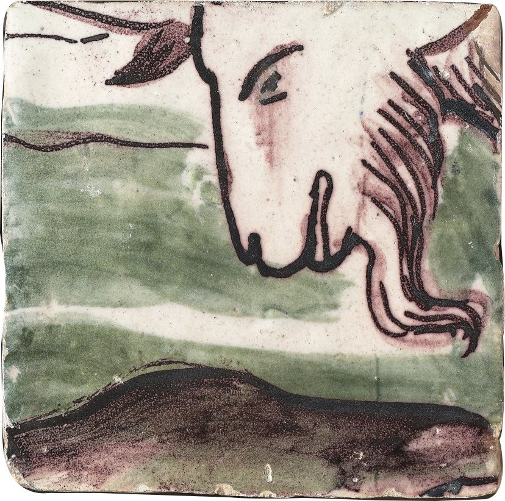
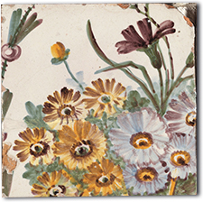
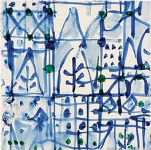
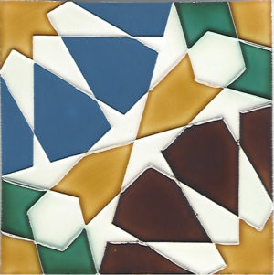
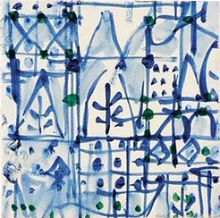
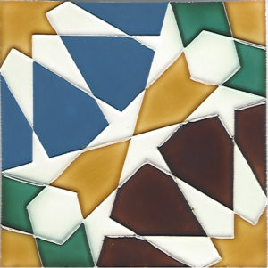

LISBON'S ancient Moorish Alfama district is where hanging laundry billows across the narrow labyrinth of cobble serpentine alleys, archways and enchanting little squares.
No visitor can help but be dazzled by the profusion of decorative wrought-iron balconies and panels of azulejos, the traditional hand-painted tiles of Portugal.
Outside the capital tile-decorated facades are ubiquitous.
But, beyond their decorative aspects, azulejos reflect the history of this once-powerful nation.
VIBRANT
TILES
FROM
PORTUGAL

In 1415 the Portuguese captured Ceuta, in what is today Morocco, ending barbarian rule and assuring their control of the Strait of Gibraltar. It was there that they discovered the beauty of Moorish tiles, which were introduced to the area around the 13th century.
The first dated azulejos were believed to have been made in Portugal in 1565. They can still be seen just south of Lisbon at the Quinta da Balcalhoa, which was built in the mid-15th century by King John I as a hunting lodge and transformed into a palace by King Manuel I for his grandmother, the Queen Mother, Infanta Brites. The tiles at the palace are in blue - azul, in Portuguese - which accounts for the name azulejos.
By the 17th century the local artisans had mastered the craft and began to use yellow, purple and green in their purely geometric designs. By 1650 tile panels representing mythological scenes, hunting motifs and landscapes made their appearance and before long azulejos were decorated with, garlands, cherubs and blazons.
A TILE CRAZE SWEPT THE COUNTRY,CREATING SO GREAT A DEMAND THAT TILES WERE EVEN IMPORTED FROM THE NETHERLANDS, REPLACING THE LOCAL KIND IN POPULARITY.
 
In the early 18th century, in an effort to regain Portuguese control of the market, an artisan named Antonio de Oliveira Bernardes and his son, Policarpo, set up a tile school in Lisbon, creating panels in the baroque style, primarily of Old Testament themes. By 1740 tiles began to be made on an industrial scale, resulting in a rapid deterioration in quality. Then, after the Lisbon earthquake of 1755, which destroyed most of the city and many of the factories, quality, hand-made tiles again became popular. They have remained so ever since.
The earthquake almost totally destroyed Lisbon and adjoining areas and it was one of the deadliest earthquakes in history. As the first earthquake studied scientifically for its effects over a large area, it led to the birth of modern seismology and earthquake engineering.
Perhaps the best known of the tilemakers are those of Sant'Anna, which are handmade from start to finish, exactly as they have been since the company was founded in 1741. Their showroom and shop in Lisbon is at 95 Rua do Alecrim, 1200 Lisbon, where beyond a mosaic of sample tiles, there are also handmade and painted ceramic bowls, lavabos, lamps, jars, candlesticks, jardinieres, fountains, chandeliers and figurines.
About a half-hour taxi ride from the center of the city is the Sant'Anna factory, in the Belém district. Although there are no organized tours, private or small-group tours can be arranged by calling ahead.
A district of Lisbon. Belém is located in western Lisbon and is famous as a museum district, as the home of many of the most notable monuments of Lisbon and Portugal.
At the factory visitors can see artisans creating the tiles, tile panels and pottery from start to finish. On the first floor, where the kilns are situated, the clay is first placed into a machine and stamped into small squares. The squares are then placed on wood and covered with sand to remove water from the clay. The backs of the tiles are roughened to simulate an antique look, then the tiles are taken to a machine that stamps them and presses them to proper size. After that they are baked in a kiln at 2,012 degrees Fahrenheit. In the next step glaze is applied and they are hand-painted. They are then rebaked in the kiln.
Upstairs, artisans paint the tiles and other pottery. One side of the large studio is devoted to the decorating of large tile panels. Here three artisans work on the designs. On the other side, perhaps a dozen people paint tiles, vases, lavabos and other pottery.
IT TAKES ONE WORKER A DAY TO PAINT ABOUT 100 TILES.
Since there are no schools for teaching tile-painting, the workers are trained on the premises. Those who show promise are apprenticed for a year before they are ready to assume a full-time position.
 



In the 20th century there has been a revival in the art of azulejos, led by prominent Posrtuguese painters, including Jorge Barrada, Manuel Alves Cargaleiro and Sa Nogueira. Now many independent artists are producing work with ancient and modern designs and a rich palette of colors.